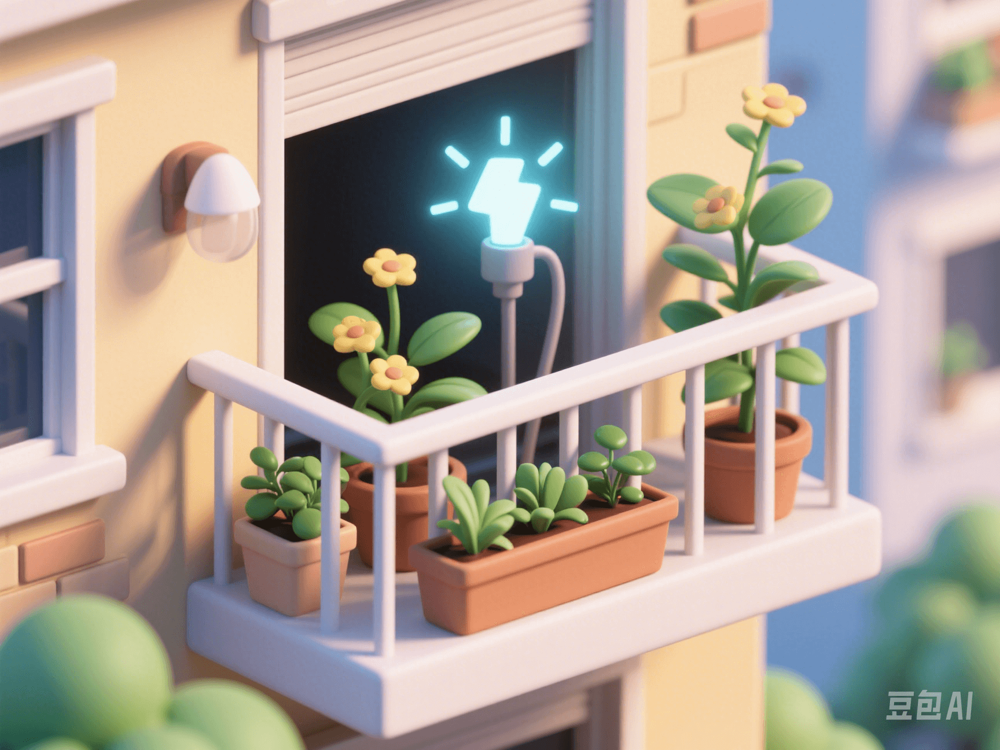

Plant Power Generation Black Technology: Could Your Potted Plant Be the Future Power Bank?
PeaceLove.Top Insights :2025-04-19
🌿 Plant Power Generation: The New Frontier of Green Energy
As the global demand for renewable energy grows, traditional energy sources such as solar and wind have become part of daily life. However, scientists are exploring a more nature-integrated energy source-plant power generation. It may sound like science fiction, but this 'plant power generation' technology is quietly becoming a hot topic in green technology and is even expected to turn your potted plant into a future 'power bank'! ⚡️ The principle of this technology is very interesting: plants absorb sunlight through photosynthesis to produce energy. Scientists extract tiny electric currents through the electrochemical reaction between plants and soil. These currents can power small electronic devices, providing green and clean energy for our lives. 🌞
🌱 How to Obtain Electricity from Plants?
The core technology of plant power generation relies on the natural process of plants-photosynthesis. During photosynthesis, plants convert sunlight into chemical energy, which gradually accumulates through the charge-transfer system in the plant. Scientists take advantage of this phenomenon by implanting electrodes into the roots or leaves of plants to convert the plant's energy into electric current. 🌍🔋 In addition, the electrochemical reaction between plants and soil also provides a stable power source. By optimizing these electrochemical reactions, scientists have been able to achieve continuous and controllable power output, and even power some low-power devices such as sensors, LED lights, and even charge some small electronic devices. 🔌
🔋 'Power Bank' Potted Plants: From Dream to Reality
Imagine that in the near future, your living room may not only have beautiful potted plants but also use them to charge your phone, smartwatch, or even small household appliances! This is the future life scene brought by plant power generation technology. 🌸📱 Currently, plant power generation technology is still in the research and experimental stage, but some exciting progress has been made. For example, researchers have successfully used a technology called 'Plant Microbial Fuel Cells (PMFC)' to generate stable power output through the interaction between plant roots and microorganisms in the soil. 💡 Although this power output cannot be compared with large-scale energy sources such as solar and wind at present, it provides an innovative energy solution for low-energy-consumption devices. 🌿💡
🌍 Environmental Protection and Sustainability: The Future of Green Energy
One of the greatest advantages of plant power generation is its environmental friendliness and sustainability. Different from traditional energy production methods, plant power generation produces almost no pollution and does not rely on limited resources. It uses the most abundant resources in nature-plants and sunlight. 🌞🌱 This technology is not only environmentally friendly but also can provide stable energy without disturbing the natural ecosystem. By popularizing plant power generation technology in cities, we may greatly reduce our dependence on fossil fuels, thereby reducing greenhouse gas emissions and promoting the global transformation towards a green and low-carbon economy. 🌍🌿
⚡️ Challenges and Prospects: The Road to Commercialization
Although the prospects of plant power generation technology are broad, its commercial application still faces many challenges. First of all, the current energy output of plant power generation is relatively low and cannot support large-scale power demand. Secondly, how to improve its efficiency, stability, and long-term reliability is also an urgent problem for scientists to solve. 🔬🛠 However, with the continuous progress of technology, the application potential of plant power generation technology is huge. In the future, this technology is expected to be popularized not only in urban households but also to provide solutions in remote areas, disaster-stricken areas, and other places with energy shortages, improving the sustainability of energy supply. 🔋🌱
💡 Conclusion: Does the Green Revolution Start from Potted Plants?
The breakthrough of plant power generation technology opens a door to a green future for us. Although we cannot currently use potted plants to provide large-scale power for our homes, the potential and development prospects of this technology are very promising. 🌿🔋 In the future, as the technology matures, plant power generation may become an important part of the energy pattern of households, cities, and even the world. Let's look forward to how this 'natural power generation' technology will move from the laboratory to reality and bring a cleaner and more sustainable energy future. 🌍⚡